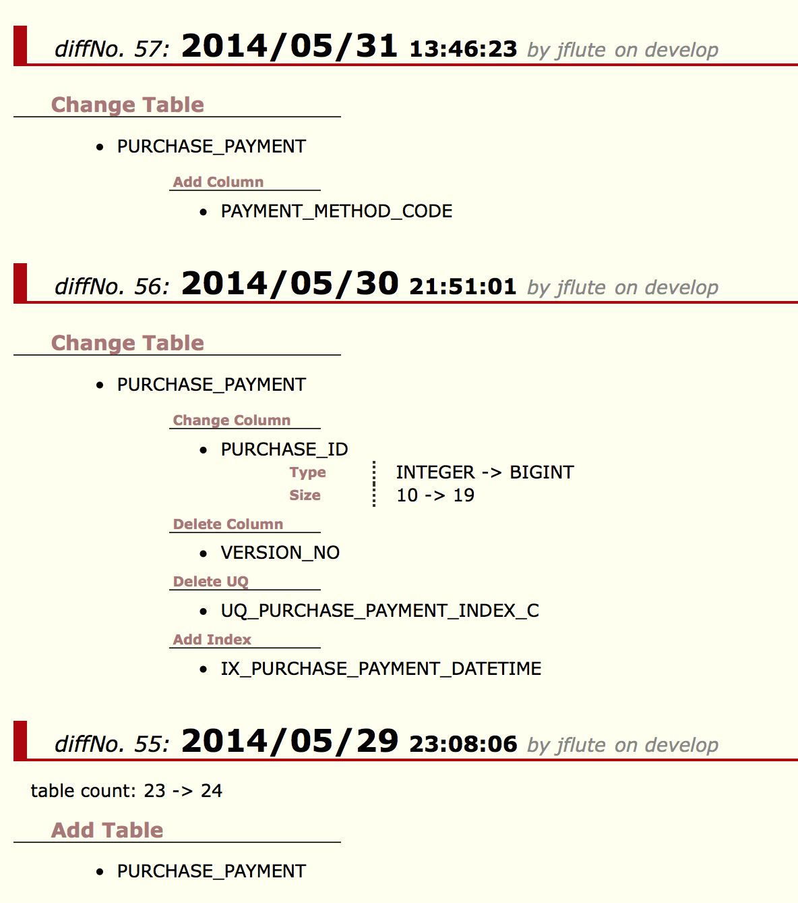

HistoryHTML
Alto DBFlute のパートです。
${indexlist}HistoryHTMLとは？
スキーマの変更履歴を人が見やすい形にまとめたドキュメントです。@since 0.9.7.1
DBFluteが自動生成のためにメタデータを取得するたびに、一つ前のメタデータと内容の比較をしてスキーマ構造に違いがあった部分だけをドキュメントにまとめます。
HistoryHTMLの例
HistoryHTMLの例 
DB変更は、実はDB設計者にとっても重い作業です。変更内容を記録し、通知しなければなりません。たくさんある場合などはその記録が追いつかない場合もしばしば。 とはいえ、記録がなければ、そのDB変更がいつ頃のものだったのか(どういうきっかけだったのか)、わかりにくくなってしまいます。通知がなければ、ディベロッパーは困ります。 DBFluteは、常にDB構造が通過する部分でもあります。その記録と通知の支援になるドキュメントを生成できれば、DB設計者もディベロッパーも助かると考えています。
シーケンス定義の違い
PostgreSQL や Oracle のシーケンスも差分として認識されます(@since 0.9.9.7F)。
シーケンスの追加や削除、インクリメントサイズの変更や初期値などがチェックされます。
カラム定義順序の違い
デフォルトでは、テーブル内のカラム定義の順序の違いは差分として認識されません。 アプリケーションの動作に影響する可能性が低い要素であり、単なる順序調整も一つのDB変更と認識されてしまうとノイズになってしまうからです。
ただ、カラム定義順序を重視するアプリケーションである場合は、documentDefinitionMap.dfprop の isCheckColumnDefOrderDiff を true にすることで、カラム定義順序も差分として認識されるようになります。@since 0.9.9.0D
DBコメントの違い
デフォルトでは、テーブルやカラムのDBコメントの違いは差分として認識されません。 アプリケーションの動作に影響する可能性が低い要素であり、単なる文言修正も一つのDB変更と認識されてしまうとノイズになってしまうからです。
ただ、DBコメントの履歴を重視するアプリケーションである場合は、documentDefinitionMap.dfprop の isCheckDbCommentDiff を true にすることで、DBコメントも差分として認識されるようになります。@since 0.9.9.0D
ストアドプロシージャの違い
オプションで、プロシージャの差分もチェックできます(@since 0.9.9.7F)。
documentDefinitionMap.dfprop の isCheckProcedureDiff を true にすることで、プロシージャも差分として認識されるようになります。
プロシージャの追加や削除、プロシージャのソースコードの行数、文字数、ハッシュ値がチェックされます。 プロシージャの行単位での具体的な差分は表示できませんが、"とにかく何かが違う" というのを知ることができます(一文字でも違えばハッシュ値が差分となります)。 具体的な差分は別途優秀なDIFFツールなどで追う方が見やすいと考え、DBFluteでは検知だけにしています。
以下の例では、SP_IN_OUT_PARAMETERというプロシージャが、行数が一行減った上にソースコードの文字数が30文字減ったことがわかります。 もし、行数も変わらず文字数も全く同じになる変更だったとしても、ハッシュ値だけが差分として検知され、"何かが変わった" ということだけはわかります。(ただし、天文学的な確率で同じハッシュ値になってしまうことはあり得ますが...)
ProcedureDiffの例

手作り差分チェック (CraftDiff)
DBFluteではチェックされない要素を独自にチェック対象にさせることもできます。 スキーマやテーブルの権限にマスタデータなど、SQLで検索できるものであればなんでも差分チェックできます。
コメントの付与
ある時点のDB変更が、(業務的に)どういうものだったのかをコメントすることができます。@since 0.9.7.2
DBFluteクライアント/schema/project-history-exampledb.diffmap を直接編集し、"comment" という項目にコメントを書くと、HistoryHTML でそれが表示されるようになります。
e.g. DB変更にコメントを付与 @project-history-exampledb.diffmap
...
; 2010/11/26 19:52:15 = map:{
; diffDate = 2010/11/26 19:52:15
; comment = 会員検索画面追加によるDB変更
; tableCount = map:{
; next = 16
; previous = 13
}
...
もろもろの細かいお話
制約名の変更は対象外
制約名の変更、例えば、PKの制約名の変更、FKの制約名の変更(カラム構成で判断)、これらはドキュメントには記載されません。 制約の増減があるわけではないので、あまりディベロッパーにとっても重要度は高い情報ではなく、対象にすると内部的な実現でややこしい問題があるため割り切っています。
具体的には、制約名をDDLで省略すると SYS12345 というように自動生成された名前になることもあり、そうするとDBを作り直すたびに制約名は変わって意味のない差分が積み上がってしまう可能性があるのです。 よって、少なくとも制約名の変更をデフォルトで差分にすることができないのです。(自動生成された名前なのかどうかを正確に判別するのは難しいため、差分ノイズが発生しないことを優先しています)
SchemaHTMLとの連携
テーブル名(最新で存在するもの)は、SchemaHTMLへのリンクになります。@since 0.9.7.2
頃合いをみて分割
HistoryHTMLはDB変更があればあるほどどんどん追記されていきます。 長い期間の運用であまりに大きくなり過ぎてしまった場合は、HistoryHTML を日付をつけてファイル名変更し、DBFluteクライアント/schema/project-history-exampledb.diffmap を削除(もしくはこれもファイル名変更で保存)することで、HistoryHTMLを分割することができます。 (単に手動でバックアップするだけ...)
開発中のDB変更、運用が始まってからのDB変更、二次開発のDB変更というように、フェーズの変わり目で分割していくのも良いでしょう。